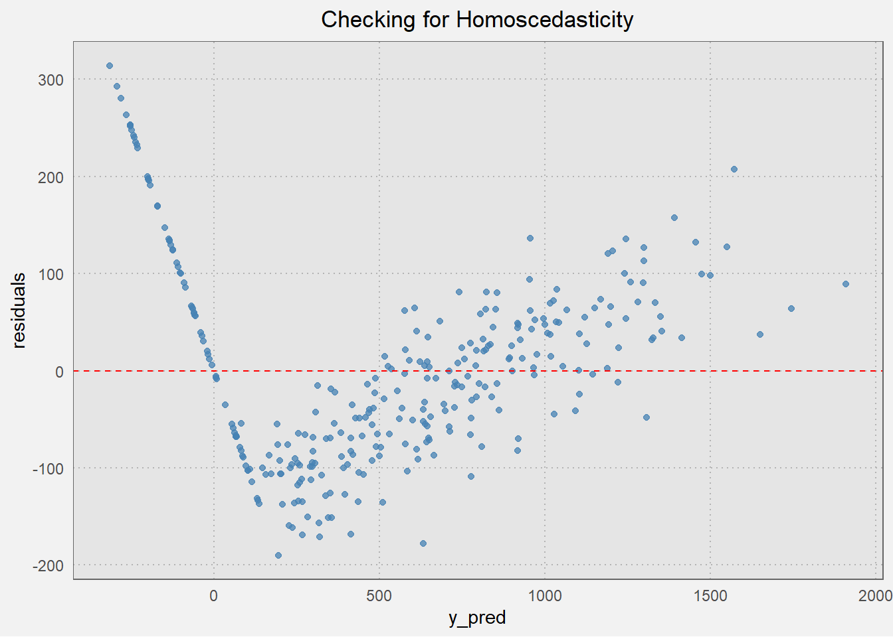
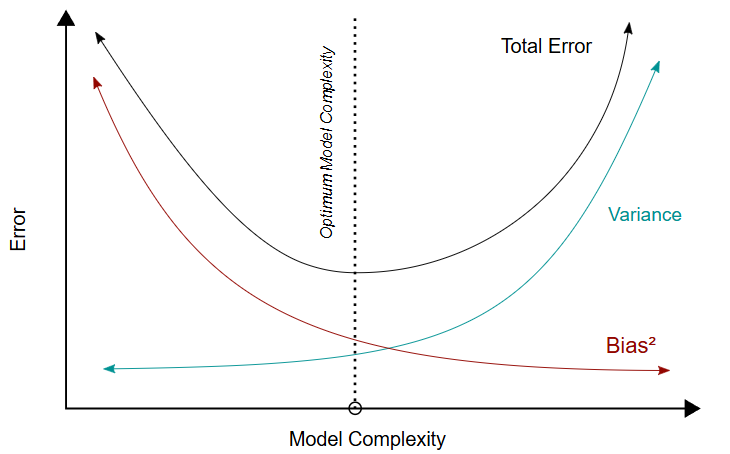
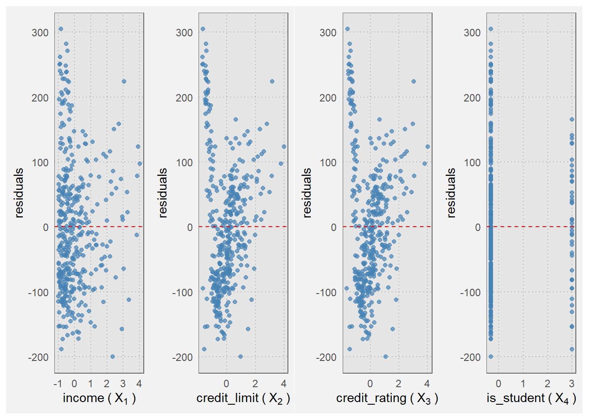
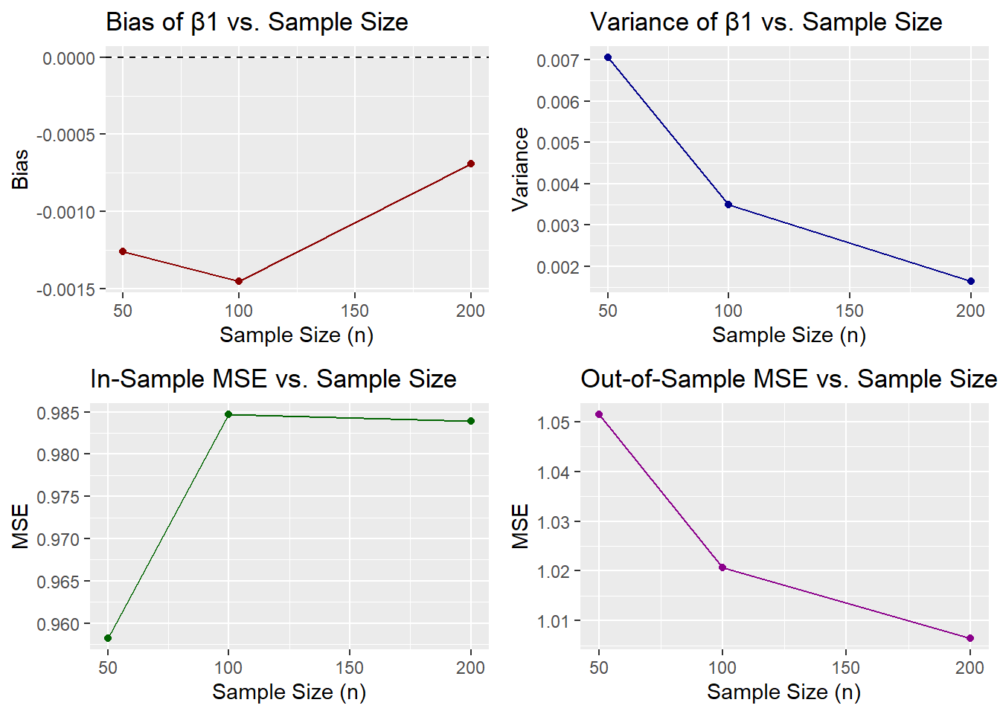
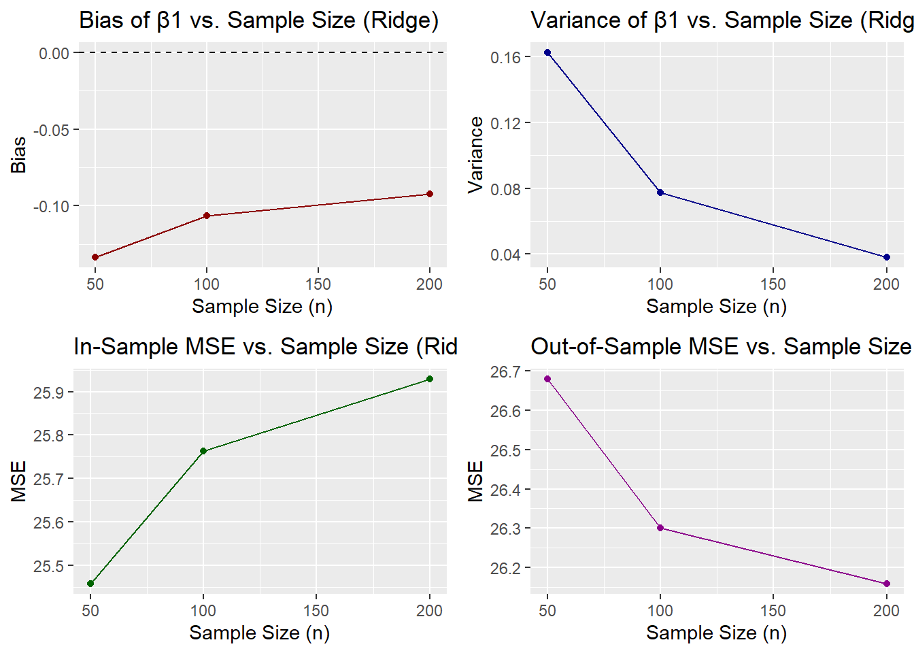
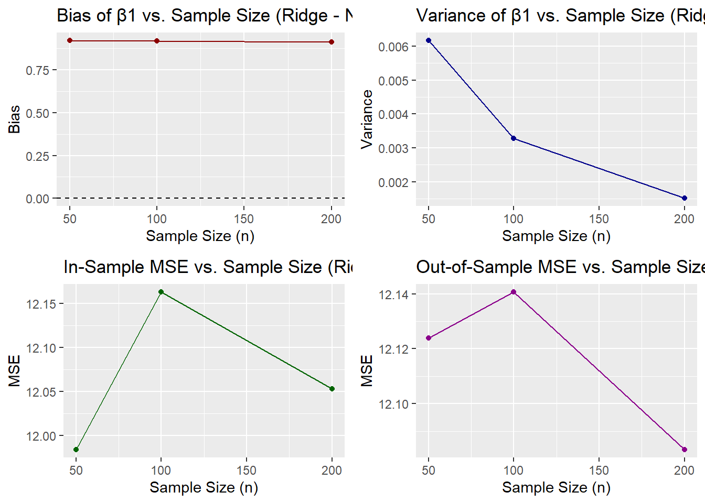

Bias and Variance Tradeoff and BLUE
Research Report 1: STA 9890
1. Introduction
Research Report 1 covers the Bias-Variance Trade off in a Linear Data Generating Process (DGP) and the BLUE-ness of Ordinary Least Squares (OLS) Regression. This will include the theoretical background, computation of the gradient descent and weight decay, and bias and variance under both a linear and non-linear DGP. Some basic statistical background is assumed for this report, e.g.: I won’t delve into detail on \(Y=f(x)+\epsilon\), which will be treated as common knowledge.
2. Theoretical Background
2.1 Bias and Variance
In modeling, Bias and Variance each play an important role in building a usable model that can predict some outcome \(y\). Both terms combined give us a general error term which in turn can be used to tell us how good a model actually is.

Bias is the “unavoidable model error”, that is it looks at the difference between the ground truth and the predicted values of our model. Variance on the other hand, is the squared difference between the predicted values and the mean of the predicted values.
2.2 MSE
A common error term is the Mean Squared Error or MSE. MSE in the 2D-linear world is defined as:
\(MSE=\frac{(y-\hat y)^2}{n}\)
Or y-true less y-predicted squared over the number of samples n. In the world of Machine Learning though, we usually use matrices to fit our models. For example, in OLS regression, we are searching for a matrix-version of a “line of best fit”, which looks like:
\(y = X\beta + \epsilon\)
In Matrix Notation, the Expected Value breaks out as:
\(E[MSE]=Bias^2+Variance \space (+Irreducible \space Noise)\)
Using the terminology from the previous section:
\(Bias^2=E[(f(X)-E[\hat f(X)])^2]\)
$Variance = E[(f(X)-Ef(X)])^2]
While the Irreducible Noise refers to the fact that, by the nature of how modelling and prediction work, there will simply always be factors that can’t be accounted for. It is denoted by:
\(\sigma^2=E[\epsilon^2]\)
Where \(\epsilon\) is the error term.
The full breakdown of the Expected MSE formula is as follows1:
\(MSE(\hat \theta)=E_{\theta}[(\hat \theta - \theta)^2]\)2
Breaking this out further:
\(=E_{\theta}[(\hat \theta - E_\theta[\hat \theta]+E_\theta[\hat \theta]-\theta)^2]\)
\(=E_\theta[(\hat \theta - E_\theta[\hat \theta])^2 + 2(\hat \theta - E_\theta [\hat \theta])(E_\theta [\hat \theta] - \hat \theta)+(E_\theta[\hat \theta - \theta)^2]\)
\(=E_\theta[(\hat \theta - E_\theta[\hat \theta])^2]+E_\theta [2(\hat \theta - E_\theta[\hat \theta])(E_\theta[\hat \theta]-\theta)]+E_\theta[(E_\theta[\hat \theta] - \theta)^2]\)
\(=E_\theta[(\hat \theta - E_\theta[\hat \theta])^2]+2(E_\theta[\hat \theta]-\theta) E_\theta[\hat \theta - E_\theta[\hat \theta]] + (E_\theta[\hat \theta] - \theta)^2\)
\(=E_\theta[(\hat \theta - E_\theta[\hat \theta])^2]+2(E_\theta[\hat \theta]-\theta)E_\theta[\hat \theta - E_\theta[\hat \theta]]+(E_\theta[\hat \theta] - \theta)^2\)
\(=E_\theta[(\hat \theta - E_\theta[\hat \theta])^2]+(E_\theta[\hat \theta] - \theta)^2\)
Remembering the Bias and Variance formulas:
\(Bias^2=E[(f(X)-E[\hat f(X)])^2]=E_\theta[(\hat \theta - E_\theta[\hat \theta])^2]\)
\(Variance=E[(\hat f(X)-E[\hat f(X)])^2]=(E_\theta[\hat \theta] - \theta)^2\)
With irreducible error term \(E[\epsilon]\)
2.3 OLS Regression and BLUE
OLS Regression is a simple linear model that tries to fit a line to the data that minimizes the Residual Sum of Squares error term. It is generally considered to fit the criteria of BLUE, that is Best Unbiased Linear Estimator. It is the Best because it has the lowest variance among all other linear estimators, it is Linear because that is the model-type, it is Unbiased because there is no difference between the ground truth and the prediction, specifically the expected value of the predicted parameter is equal to the parameter in the DGP, or \(E[\hat \theta]=\theta\), and it is an estimator because it estimates \(\theta^2\). However, there are exceptions to this BLUE property.
2.4 DGP and Misspecification
A Data Generating Process or DGP is the function of the world that generates data. It is the “ground truth” upon which we try to model the data we do have. Everything discussed until now all is built on-top of this idea that the real-world has unknowns and we can only do our best to try and understand and even predict those unknowns.
In the context of OLS Regression, the faults for OLS stem from the fact that it is only a BLUE model-type when the underlying DGP is linear. However, what happens if the real DGP isn’t \(y=X\beta+\epsilon\), rather it’s \(y=X^2 +\epsilon\) a quadratic equation. This would be model misspecification and would cause issues in trying to estimate parameters our DGP. We can test for whether OLS would be a good model type by looking at various factors. First is an expectation of Homoscedasticity in the data, that is \(Var(\epsilon_i|X)=\sigma^2\) or that the residuals (that is, \(e=y-\hat y\)) have a constant error variance. Running an OLS model on the Credit Card dataset from ISLR3 with a predicted variable of \(y\) being the credit card balance, it produces the following chart:
Homoscedasticity of \(\hat y\) from ISL Credit Data Set
If these were more evenly spread out around the mean, this would be a good indication that the OLS model would be the best to use. However, that is not the case here: we see somewhat of a checkmark shape that coalesces in the bottom-left.
To check for the unbiased property in the DGP, we can look towards Endogeneity, or that the errors are not affected by the input \(X\) variables: \(E[\epsilon|X]=0\). Looking at the input X variables:

Endogeneity of feature residuals from ISL Credit Data Set
The spread is not very even here, though it’s not extremely lopsided. These however show that we likely will have bias in our model if we try to use OLS.
3. Computation
3.1 Derivation for OLS
OLS seeks to minimize some predictor variable \(\hat \beta\) to minimize the error function. To do this, we look at the error term that OLS is trying to minimize, then substitute it in to find a proper value for \(\hat \beta\):
\(RSS=\Sigma^n_{i=1}=||\epsilon||^2\)
Since \(y=X\beta+\epsilon\) we can rearrange the terms so \(\epsilon=y-X\beta\), expand the terms, then derive with respect to \(\beta\):
\(RSS=||y-X||^2=(y-X\beta)^T(y-X\beta)\)
\(\frac{d}{d\beta}[(y-X\beta)^T(y-X\beta)]=\frac{d}{d\beta}[y^Ty-2\beta^T X^Ty+\beta^TX^TX\beta]\)
The \(y^T y\) term is a constant while \(\frac{d}{d\beta}[\beta^T]=1\) so we get the following and set it equal to 0 to minimize it:
\(-2X^Ty+2X^T X\beta=0\)
\(2X^TX\beta=2X^T y\)
\(\beta = \frac {X^T y} {X^T X}=(X^T X)^{-1} X^T y\)
3.2 OLS Gradient
Gradient Descent refers to the process of iteratively fitting models to the gradient of a function is the vector field whose value at point p gives the direction and rate of the fastest increase4. In OLS terms, this translates to:
\(\beta^{(k+1)}=\beta^{k}-c\nabla\mathcal{L}|_{\beta=\beta^{(k)}}\) where \(\nabla\mathcal{L}\) is the loss function on the gradient.
Gradient Descent keeps going until the parameter and objective each converge, or: \(\beta^{(k+1)}\approx\beta^{(k)}\) and \(\mathcal{L}(\beta^{(k+1)})\approx\mathcal{L}(\beta^{(k)})\).
The setup is similar to the closed-form derivation from the previous step, it turns into:
\(\beta^{(k+1)}=\beta^k-c\mathcal{L}|_{\beta=\beta^k}=\beta^k-c(-2X^Ty+2X^TX\beta)=\beta^k-2c(X^TX\beta^k-X^Ty)\)
Plotting it out, it looks like:
Converged at iteration 293Sample Gradient Descent with convergence in OLS
3.3 OLS Weight Decay
To try and make up for the issues of overfitting and large parameterization, OLS can implement a process known as weight decay. This adds a penalty term to the gradient formula to penalize large parameters and try to keep the model simple. The set-up is similar to before but with an added penalty term:
\(\beta^{(k+1)}=\beta^{k}-c\nabla\mathcal{L}|_{\beta=\beta^{(k)}}-\mathcal{w}\beta^{(k)}\)
Plugging this into the gradient derivative from the previous section, we get to this step:
\(=\frac{\partial}{\partial \beta}[y^Ty-2\beta^TX^Ty+\beta^TX^TX\beta-\mathcal{w}\beta]\)
The \(y^Ty\) term disappears since it’s a constant in this context and the \(\beta^T\) terms set to \(\frac{\partial}{\partial \beta}[\beta^T]=1\)
\(\nabla\mathcal{L}=-2X^Ty+2X^TX\beta-\mathcal{w}\beta\)
Plugging this back into the original formula for \(\beta^{(k+1)}\):
\(\beta^{(k+1)}=\beta^{(k)}-c(-2X^Ty+2X^TX\beta-2\mathcal{w}\beta)\)
Which finally equals:
\(\beta^{(k+1)}=\beta^{(k)}-2c(X^TX\beta^{(k)}-X^Ty-\mathcal{w}I)\)
And in simulation-land, we can see this will converge sooner than just regular Gradient Descent from the previous section:
Code
## Simulate Gradient Descent
# Function
gradient_descent_weight_decay <- function(X, y, alpha = 0.01, lambda_val = 0.1, num_iterations = 1000, tol = 1e-6) {
# Add intercept column if not already present
if (!all(X[,1] == 1)) {
X <- cbind(1, X)
}
n <- nrow(X)
k <- ncol(X)
beta <- rep(0, k)
loss_history <- numeric()
for (i in 1:num_iterations) {
# Compute gradient with weight decay
gradient <- 2 * (t(X) %*% X %*% beta - t(X) %*% y + lambda_val * beta) / n
beta <- (1 - 2 * alpha * lambda_val) * beta - alpha * gradient
# Compute loss (MSE + L2 penalty)
loss <- mean((y - X %*% beta)^2) + lambda_val * sum(beta^2)
loss_history[i] <- loss
# Convergence check
if (i > 1 && abs(loss_history[i] - loss_history[i - 1]) < tol) {
message("Converged at iteration ", i)
break
}
}
list(beta = beta, loss_history = loss_history)
}Converged at iteration 141Sample Weight Decay and Gradient Descent with convergence in OLS
3.4 Ridge Regression
Ridge Regression is an \(\ell_p-Regression\) function, specifically \(\ell_2\). It applies a penalty term to the original OLS parameters, \(\lambda\), to minimize the effects of large coefficients and overfitting.
\(\ell_2 (\beta) = ||y-X\beta||^2+\lambda ||\beta||^2\)
Breaking this out then deriving it with respect to β:
\(\ell_2 (\beta) = (y-X\beta)^T (y-X\beta) + \lambda \beta^T \beta = -2X^T y + 2X^T X + 2\lambda \beta\)
Setting this equal to 0 and solving for \(\beta\):
\(-2X^Ty + 2X^T X \beta + 2 \lambda \beta = 0\)
Where \(\beta = (X^T X \lambda I)^{-1} X^T y\)
Deriving the gradient term \(\beta^{k+1} = \beta^k - c \nabla L|_{\beta = \beta^k}=\beta^k-2c(X^T y + X^T X \beta^k - \lambda I)\)
Which is the same form as OLS with weight decay: \(\beta^k - 2c(X^T y + X^T X \beta^k - wI)\)
4. Bias and Variance under a Linear DGP
4.1 Positing a Linear DGP with Monte Carlo
If we assume a Linear DGP of \(y=X\beta + \epsilon\), we can use Monte Carlo simulations to view bias and variance under these conditions.
Code
# Parameters
num_simulations <- 500
sample_sizes <- c(50, 100, 200)
beta_true <- c(5, 2) # Intercept and slope
# Initialize storage
results <- data.frame()
# Monte Carlo loop
for (n in sample_sizes) {
beta_estimates <- matrix(NA, nrow = num_simulations, ncol = 2)
in_sample_mse <- numeric(num_simulations)
out_sample_mse <- numeric(num_simulations)
for (sim in 1:num_simulations) {
# Generate training data
X <- runif(n, -3, 3)
y <- beta_true[1] + beta_true[2] * X + rnorm(n, 0, 1)
X_mat <- cbind(1, X) # Add intercept
# Fit model
model <- lm(y ~ X)
beta_hat <- coef(model)
beta_estimates[sim, ] <- beta_hat
# In-sample MSE
y_pred <- predict(model)
in_sample_mse[sim] <- mean((y - y_pred)^2)
# Generate test set
X_test <- runif(n, -3, 3)
y_test <- beta_true[1] + beta_true[2] * X_test + rnorm(n, 0, 1)
test_df <- data.frame(X = X_test)
# Out-of-sample MSE
y_test_pred <- predict(model, newdata = test_df)
out_sample_mse[sim] <- mean((y_test - y_test_pred)^2)
}
# Compute bias and variance for β1 (slope)
beta1_hat <- beta_estimates[, 2]
bias_beta1 <- mean(beta1_hat) - beta_true[2]
variance_beta1 <- var(beta1_hat)
# Store results
results <- rbind(results, data.frame(
sample_size = n,
bias_beta1 = bias_beta1,
variance_beta1 = variance_beta1,
in_sample_mse = mean(in_sample_mse),
out_sample_mse = mean(out_sample_mse)
))
}
# Plot Bias, Variance, and MSEs
par(mfrow = c(2, 2))
# Plot Bias
p1 <- ggplot(results, aes(x = sample_size, y = bias_beta1)) +
geom_line(color = "darkred") +
geom_point(color = "darkred") +
geom_hline(yintercept = 0, linetype = "dashed") +
labs(title = "Bias of β1 vs. Sample Size", x = "Sample Size (n)", y = "Bias")
# Plot Variance
p2 <- ggplot(results, aes(x = sample_size, y = variance_beta1)) +
geom_line(color = "darkblue") +
geom_point(color = "darkblue") +
labs(title = "Variance of β1 vs. Sample Size", x = "Sample Size (n)", y = "Variance")
# In-Sample MSE
p3 <- ggplot(results, aes(x = sample_size, y = in_sample_mse)) +
geom_line(color = "darkgreen") +
geom_point(color = "darkgreen") +
labs(title = "In-Sample MSE vs. Sample Size", x = "Sample Size (n)", y = "MSE")
# Out-of-Sample MSE
p4 <- ggplot(results, aes(x = sample_size, y = out_sample_mse)) +
geom_line(color = "darkmagenta") +
geom_point(color = "darkmagenta") +
labs(title = "Out-of-Sample MSE vs. Sample Size", x = "Sample Size (n)", y = "MSE")
# Arrange in 2x2 grid
grid.arrange(p1, p2, p3, p4, nrow = 2)
Bias and Variance under a Linear DGP with Monte Carlo simulations
4.2 Repeating with Ridge Regression
Let’s repeat the Monte Carlo simulations using Ridge Regression to see the difference between it and OLS
Code
# Set simulation parameters
num_simulations <- 500
sample_sizes <- c(50, 100, 200)
beta_true <- c(5, 2)
lambda_ridge <- 1.0 # L2 regularization strength
# Storage for results
ridge_results <- data.frame()
# Loop over sample sizes
for (n in sample_sizes) {
beta_estimates <- matrix(NA, nrow = num_simulations, ncol = 2)
in_sample_mse <- numeric(num_simulations)
out_sample_mse <- numeric(num_simulations)
for (sim in 1:num_simulations) {
# Generate training data
X <- runif(n, -3, 3)
y <- beta_true[1] + beta_true[2] * X + rnorm(n)
X_mat <- cbind(1, X) # Add intercept column
# Fit Ridge regression (glmnet expects matrix input, no intercept term)
ridge_model <- glmnet(x = X_mat, y = y, alpha = 0, lambda = lambda_ridge, intercept = FALSE, standardize = FALSE)
beta_hat <- as.vector(coef(ridge_model, s = lambda_ridge))[-1] # drop intercept row
beta_estimates[sim, ] <- beta_hat
# In-sample prediction
y_pred <- X_mat %*% beta_hat
in_sample_mse[sim] <- mean((y - y_pred)^2)
# Test set
X_test <- runif(n, -3, 3)
y_test <- beta_true[1] + beta_true[2] * X_test + rnorm(n)
X_test_mat <- cbind(1, X_test)
# Out-of-sample prediction
y_test_pred <- X_test_mat %*% beta_hat
out_sample_mse[sim] <- mean((y_test - y_test_pred)^2)
}
# Bias and variance of β1 (slope)
beta1_hat <- beta_estimates[, 2]
bias_beta1 <- mean(beta1_hat) - beta_true[2]
variance_beta1 <- var(beta1_hat)
# Save results
ridge_results <- rbind(ridge_results, data.frame(
sample_size = n,
bias_beta1 = bias_beta1,
variance_beta1 = variance_beta1,
in_sample_mse = mean(in_sample_mse),
out_sample_mse = mean(out_sample_mse)
))
}
# Bias
p1 <- ggplot(ridge_results, aes(x = sample_size, y = bias_beta1)) +
geom_line(color = "darkred") +
geom_point(color = "darkred") +
geom_hline(yintercept = 0, linetype = "dashed") +
labs(title = "Bias of β1 vs. Sample Size (Ridge)",
x = "Sample Size (n)", y = "Bias")
# Variance
p2 <- ggplot(ridge_results, aes(x = sample_size, y = variance_beta1)) +
geom_line(color = "darkblue") +
geom_point(color = "darkblue") +
labs(title = "Variance of β1 vs. Sample Size (Ridge)",
x = "Sample Size (n)", y = "Variance")
# In-sample MSE
p3 <- ggplot(ridge_results, aes(x = sample_size, y = in_sample_mse)) +
geom_line(color = "darkgreen") +
geom_point(color = "darkgreen") +
labs(title = "In-Sample MSE vs. Sample Size (Ridge)",
x = "Sample Size (n)", y = "MSE")
# Out-of-sample MSE
p4 <- ggplot(ridge_results, aes(x = sample_size, y = out_sample_mse)) +
geom_line(color = "darkmagenta") +
geom_point(color = "darkmagenta") +
labs(title = "Out-of-Sample MSE vs. Sample Size (Ridge)",
x = "Sample Size (n)", y = "MSE")
# Display all four plots in 2x2 layout
grid.arrange(p1, p2, p3, p4, nrow = 2)
Bias and Variance under a Linear DGP with Monte Carlo simulations using Ridge Regression
While we can see the bias is always a little worse in Ridge Regression, the variance takes a sharper decline; eventually we end up with a better out-of-sample MSE than we did with OLS.
5. Bias and Variance under non-Linear DGP
5.1 Monte Carlo Simulation for non-Linear DGP
Similar to the previous section, here we will look at how bias and variance are affected when the DGP is non-linear, \(y=X^2 \beta + \epsilon\)
Code
# Parameters
num_simulations <- 500
sample_sizes <- c(50, 100, 200)
lambda_ridge <- 1.0
beta <- c(5, 2) # Intercept and quadratic coefficient
# Function to simulate non-linear DGP: y = β0 + β1 * x^2 + ε
generate_nonlinear_dgp <- function(n, beta = c(5, 2), noise_sd = 1.0) {
x <- runif(n, -3, 3)
y <- beta[1] + beta[2] * x^2 + rnorm(n, sd = noise_sd)
return(list(x = x, y = y))
}
# Storage for results
ridge_nonlinear_results <- data.frame()
# Simulation
for (n in sample_sizes) {
beta_estimates <- matrix(NA, nrow = num_simulations, ncol = 2)
in_sample_mse <- numeric(num_simulations)
out_sample_mse <- numeric(num_simulations)
for (sim in 1:num_simulations) {
# Generate training data
train <- generate_nonlinear_dgp(n)
x <- train$x
y <- train$y
X_quad <- cbind(1, x^2)
# Fit Ridge regression
ridge_model <- glmnet(x = X_quad, y = y, alpha = 0, lambda = lambda_ridge,
intercept = FALSE, standardize = FALSE)
beta_hat <- as.vector(coef(ridge_model, s = lambda_ridge))[-1]
beta_estimates[sim, ] <- beta_hat
# In-sample MSE
y_pred <- X_quad %*% beta_hat
in_sample_mse[sim] <- mean((y - y_pred)^2)
# Test set
test <- generate_nonlinear_dgp(n)
x_test <- test$x
y_test <- test$y
X_test_quad <- cbind(1, x_test^2)
y_test_pred <- X_test_quad %*% beta_hat
out_sample_mse[sim] <- mean((y_test - y_test_pred)^2)
}
# Bias and variance for β1 (quadratic term)
beta1_hat <- beta_estimates[, 2]
bias_beta1 <- mean(beta1_hat) - beta[2]
variance_beta1 <- var(beta1_hat)
# Store results
ridge_nonlinear_results <- rbind(ridge_nonlinear_results, data.frame(
sample_size = n,
bias_beta1 = bias_beta1,
variance_beta1 = variance_beta1,
in_sample_mse = mean(in_sample_mse),
out_sample_mse = mean(out_sample_mse)
))
}
# Bias
p1 <- ggplot(ridge_nonlinear_results, aes(x = sample_size, y = bias_beta1)) +
geom_line(color = "darkred") +
geom_point(color = "darkred") +
geom_hline(yintercept = 0, linetype = "dashed") +
labs(title = "Bias of β1 vs. Sample Size (Ridge - Non-Linear)",
x = "Sample Size (n)", y = "Bias")
# Variance
p2 <- ggplot(ridge_nonlinear_results, aes(x = sample_size, y = variance_beta1)) +
geom_line(color = "darkblue") +
geom_point(color = "darkblue") +
labs(title = "Variance of β1 vs. Sample Size (Ridge - Non-Linear)",
x = "Sample Size (n)", y = "Variance")
# In-sample MSE
p3 <- ggplot(ridge_nonlinear_results, aes(x = sample_size, y = in_sample_mse)) +
geom_line(color = "darkgreen") +
geom_point(color = "darkgreen") +
labs(title = "In-Sample MSE vs. Sample Size (Ridge - Non-Linear)",
x = "Sample Size (n)", y = "MSE")
# Out-of-sample MSE
p4 <- ggplot(ridge_nonlinear_results, aes(x = sample_size, y = out_sample_mse)) +
geom_line(color = "darkmagenta") +
geom_point(color = "darkmagenta") +
labs(title = "Out-of-Sample MSE vs. Sample Size (Ridge - Non-Linear)",
x = "Sample Size (n)", y = "MSE")
# Display 2x2 grid
grid.arrange(p1, p2, p3, p4, nrow = 2)
Bias and Variance of non-Linear DGP using Monte Carlo simulations
The bias is now nearly constant as seen in the top-left, while the in-and-out of sample errors seem to still follow the trends we saw with the last two.